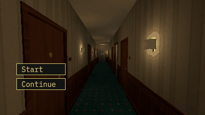

Tutorials › Start an Anomaly Loop Behind a Menu
How to Start an Anomaly Loop Behind a Menu in Godot 4
The loop waits behind your title menu: nothing happens before Start, and the floor behind the menu is the one the run starts on.

An anomaly game opens on its title menu with the level already in the scene behind it. This loop does nothing until a run has begun: no floor is entered, no choice made, nobody moved, and the level shows the floor the run will start on, clean. Start begins the run, Continue loads a save, and either may be called before the loop is ready (from a node above it in the tree): the call waits and runs once it is.
Script: anomaly_loop_menu.gd (MIT) · Godot 4.3 or newer · its folder on GitHub
How to use it
- Add
anomaly_loop_menu.gdto a Node in your level and setlevelto your level's node: it needsshow_floor(number, anomaly)(dress the floor quietly) andplayer_on_floor(). - Leave
start_on_readyoff for a game with a menu. Your menu's Start callsstart_run(); its Continue reads the dictionaryget_save()gave (JSON in a file) and callsload_save(data). - Connect
floor_startedandentered_floor: neither comes before a run has begun. - For a game without a menu, turn
start_on_readyon: the run begins at the end of the first frame, and a save loaded in the scene's own_readystill wins.
What it needs
- A level node with
show_floor()andplayer_on_floor(); the rest of your loop (the stairwells, the move, the choice) goes in_physics_processafter the guard.
Try it free
The Liminal PSX Anomalies Free Sampler has the hotel floor and the pack's loop game, which also does nothing before a run has begun (from version 1.1), with five anomalies on a run of three floors.
How it was tested
In Godot 4.3 and 4.7.2, on a stand-in level and menu: the start floor shows clean before a run; nothing is entered before one; Start begins the run once; a save goes through JSON and back; a Continue called from a node above the Loop waits for it; start_on_ready alone begins a run, and a save loaded in the scene's _ready wins over it.
The code
extends Node
## How to Start an Anomaly Loop Behind a Menu in Godot 4
## Cordatix Godot 4 PSX tutorials, MIT licensed: https://github.com/GoldenSparrow-Dev/cordatix-godot-psx-tutorials
## The devlog: https://cordatix.itch.io/liminal-psx-anomalies/devlog/1732551/how-to-start-an-anomaly-loop-behind-a-menu-in-godot-4-liminal-psx-anomalies-11
## A loop game's run, held behind its title menu. Until a run has begun the loop does nothing (no floor entered, no
## choice, no move) and the level shows the floor the run will start on, clean, so the menu has the right floor
## behind it. Your menu's Start calls start_run(), its Continue load_save(); called before the loop is ready (from a
## node above it in the tree, whose _ready comes first) they wait and run once it is.
signal floor_started(number: int)
signal entered_floor(number: int)
## Your level: show_floor(number, anomaly) dresses it quietly; player_on_floor() says the player stands on it.
@export var level: Node
@export var start_floor := 7
## Begin a run as the scene starts (a game without a menu); a load_save() in the scene's own _ready wins.
@export var start_on_ready := false
var floor_number := 0
var anomaly := ""
var begun := false # nothing happens before a run has begun
var _set_up := false
var _early: Array[Callable] = [] # calls made before the loop was set up, in their order
var _entered := false
func _ready() -> void:
# ready before the level (above it, or first among its siblings): set up at the end of the frame, once it is
if level.is_node_ready():
_setup()
else:
_setup.call_deferred()
func _setup() -> void:
floor_number = start_floor
level.show_floor(start_floor, "") # the start floor, clean and quiet: the floor behind the menu
_set_up = true
var early := _early
_early = []
for c in early:
c.call()
if start_on_ready:
_start_on_ready.call_deferred()
func _start_on_ready() -> void:
if not begun:
start_run()
func start_run() -> void:
if not _set_up:
_early.append(start_run)
return
begun = true
_dress(start_floor, "")
func load_save(data: Dictionary) -> void:
if not _set_up:
_early.append(load_save.bind(data))
return
begun = true
floor_number = int(data["floor"])
anomaly = str(data["anomaly"])
level.show_floor(floor_number, anomaly) # quiet: a floor loaded is not a new floor
_entered = false
func get_save() -> Dictionary:
return {"floor": floor_number, "anomaly": anomaly}
func _dress(number: int, id: String) -> void:
floor_number = number
anomaly = id
level.show_floor(number, id)
_entered = false
floor_started.emit(number)
func _physics_process(_delta: float) -> void:
if not begun:
return # the menu's floor: a walk behind it chooses nothing
if not _entered and level.player_on_floor():
_entered = true
entered_floor.emit(floor_number)
# then the rest of your loop: arm on the floor, watch both stairwells, move the player, choose and dress
The devlog and the pack
The step-by-step walkthrough is the devlog How to Start an Anomaly Loop Behind a Menu in Godot 4 (Liminal PSX Anomalies) on itch.io, written for Liminal PSX Anomalies, a PS1-style asset pack by Cordatix for Godot 4, Unity, Unreal and Blender.